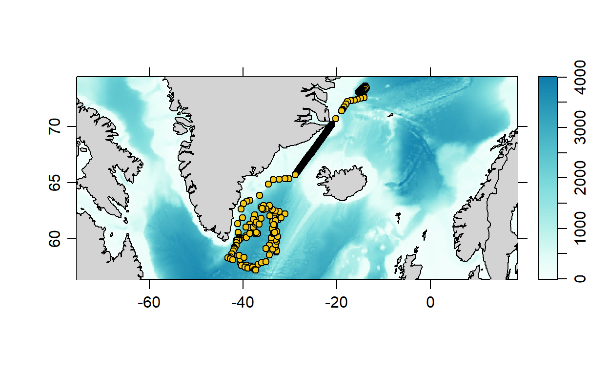
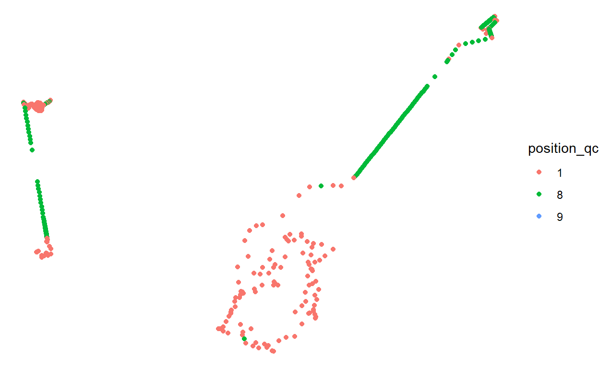

A few floats with interpolated positions
These floats were first posted about by Jaimie Harbin, who noted that some interpolations are particularly questionable. This affects Canadian waters more so than others as we have a lot of ice (which prevents floats from communicating their position) and a complex coastline (which the default linear interpolation frequently crosses).
library(argoFloats)
index1 <- subset(getIndex(), ID = '6902728')
plot(index1)

These points are documented as “interpolated” in the individual .nc files, identified as the POSITION_QC variable having a value of 8.
library(argodata)
library(dplyr)
library(ggplot2)
profiles <- bind_rows(
argo_global_bio_prof(),
argo_global_prof()
) %>%
argo_filter_float(c(6902967, 6902728)) %>%
argo_prof_prof() %>%
group_by(date_location, latitude, longitude) %>%
slice(1) %>%
ungroup()
ggplot(profiles, aes(longitude, latitude)) +
geom_point(aes(col = position_qc)) +
theme_void()

More detail about the profile positions:
rmarkdown::paged_table(profiles)
For attribution, please cite this work as
Dunnington (2021, May 14). Argo Canada Development Blog: A Questionable Interpolation. Retrieved from https://argocanada.github.io/blog/posts/2021-05-14-a-questionable-interpolation/
BibTeX citation
@misc{dunnington2021a,
author = {Dunnington, Dewey},
title = {Argo Canada Development Blog: A Questionable Interpolation},
url = {https://argocanada.github.io/blog/posts/2021-05-14-a-questionable-interpolation/},
year = {2021}
}